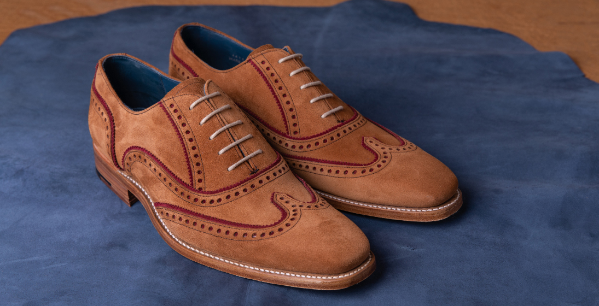
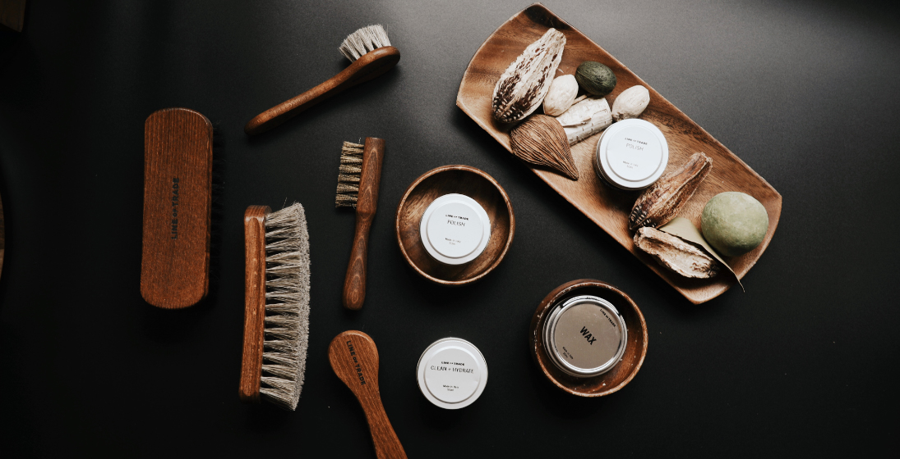

Краткое описание статьи об обуви и краткий список по уходу за ней
Материала для обуви лучше натуральной кожи все ещё не придумали. Качественную кожу очень приятно носить, она идеально ложится по ноге, в нужных местах немного растягивается. В кожаной обуви, если она соответствует погоде, создаётся хороший микроклимат – ноги не мёрзнут, не потеют, и чувствуют себя очень комфортно. Неудивительно, что по статистике больше 60% покупателей выбирает обувь именно из гладкой натуральной кожи. Вдобавок кожа практична и не требует трудоёмкого ухода.
Но это совсем не означает, что можно раз в полгода протереть обувь тряпочкой и на этом остановиться. Так же, как кожа лица и тела, материал обуви нуждается в заботе. Регулярный уход надолго продлит срок службы любимой пары и сделает её аккуратной и сияющей, словно только что из магазина.
- 1. На что стоит обратить внимание перед покупкой
- 2. Перед тем, как надеть обувь первый раз
- 3. Ежедневный уход за кожаной обувью в домашних условиях

Подробное описание по уходу за обувью
После каждого выхода на улицу протирайте обувь сухой салфеткой, если на коже только пыль, или влажной тряпкой - в случае сильного загрязнения. Начинайте мыть с каблука, затем очистите подошву и после этого – материал верха. После мытья нужно как следует протереть пару мягкой тканью, чтобы избавить от лишней влаги. Иначе обувь будет сушиться очень долго.

Второй этап – сушка.Ни в коем случае не используйте источники тепла – батарею, обогреватель, фен с горячим воздухом. Да, они сушат быстро, но за это приходит расплата в виде задубевшей покоробившейся кожи.
Нужно вытащить стельки, набить обувь бумагой либо положить внутрь формодержатели и сушить при комнатной температуре. Тогда ваши туфли или сапоги надолго сохранят красивую форму без заломов.
Сушка длится довольно долго, и поэтому не рекомендуется носить одну и ту же пару каждый день. Обувь и подкладка должны отдохнуть и расправиться, только тогда вам будет комфортно и тепло.
И наконец – крем.Сухую и чистую пару нужно обработать кремом, чтобы кожа оставалась эластичной, мягкой и блестящей.
Нанесите крем тоненьким слоем с помощью обувной щётки, и аккуратно распределите по всей поверхности. Затем через несколько часов, когда крем впитается, сотрите остатки сухой салфеткой и отполируйте кожу мягкой тряпочкой.
Крем подбирается точно в цвет обуви, поэтому стоит задуматься ещё перед покупкой, каким уходовым средством вы будете пользоваться.
В магазине легко подобрать черный, коричневый и самый универсальный – бесцветный крем. В продаже есть и другие цвета, но бывает сложно найти нужный оттенок.
По мере необходимости дополнительно обрабатывайте пару водоотталкивающими спреями.